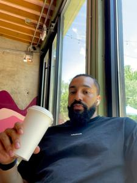

Hi, I'm Jordan.
Project Manager, strategist, and former athlete with a sharp eye for results and impact.
Based in Atlanta, GA.
Focused on:

Hi, I'm Jordan.
Project Manager, strategist, and former athlete with a sharp eye for results and impact.
Based in Atlanta, GA.
Focused on:
Launched and oversaw 180+ targeted promotions for Uber Eats, generating $18M+ in incremental revenue and achieving 90% retention rate using Agile and Waterfall frameworks.
Delivered $5M ARR and $13M implementation revenue by managing SaaS rollouts for clients like Peloton and The Gap. Directed global project portfolios with cross-functional alignment.
2024 – Present
Lead end-to-end project execution for strategic Uber Eats promotions. Delivered $18M+ in value by aligning stakeholders, optimizing campaigns, and managing QA, sales, and product workflows.
2022 – 2024
Oversaw SaaS implementations and proposal lifecycles, supporting $40M pipeline and $5M ARR. Collaborated across legal, execs, and engineering teams.
2021 – 2022
Analyzed market trends and advised strategic clients. Maintained 90% client retention through tailored data reporting and churn risk strategy.